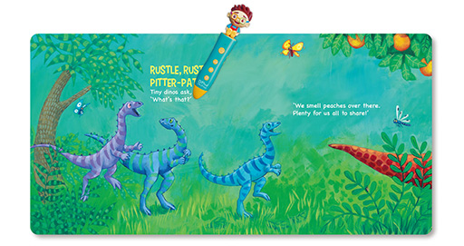

朗读故事或字词

D Mind & the Prince 英语学习系统中每一件纸质配件都能用AI笔点读。先用AI笔点读书本的封面或挂图上的 D Mind & the Prince 商标，启动点读内容；再随意点读书本内的文字或图画，AI笔便会朗读相关内容或发出声效，帮助孩子有效地学习书本内容。字卡类内容可以直接点读，不需启动。

D Mind & the Prince 的AI笔不是一般的点读笔，当孩子使用AI笔点读 D Mind & the Prince 英语学习系统时，AI笔会自动经由无线网络发送点读数据至云端，并进行大数据分析，让家长掌握孩子的学习进度。
朗读故事或字词
D Mind & the Prince 英语学习系统中每一件纸质配件都能用AI笔点读。先用AI笔点读书本的封面或挂图上的 D Mind & the Prince 商标，启动点读内容；再随意点读书本内的文字或图画，AI笔便会朗读相关内容或发出声效，帮助孩子有效地学习书本内容。字卡类内容可以直接点读，不需启动。
D Mind & the Prince 的绘本系列附有故事模式，先用AI笔点选书本的封面，再在扉页点选标志进入故事模式，AI笔便会开始讲故事。
孩子的点读数据会经无线网络上传到云端，配备迪迈小王子APP便能看到孩子的阅读习惯和数据分析，帮助孩子有效地计划学习进程。
互动小游戏
Vocabulary Converters 和Alphabet Tracing Puzzles 都配有AI笔游戏功能，用AI笔跟孩子玩游戏，能促进学习成效。
Vocabulary Converters 玩法：
用AI笔点读任何一张字卡左上角的游戏标志，根据AI笔读出的问题，找出正确的字卡。AI笔会随机问三道问题，每道问题有三次作答机会。
Alphabet Tracing Puzzles 玩法：
你可以让孩子用手指跟着字母卡上的坑纹学习写字，也可以用AI笔描写记录孩子的每次练习。用AI笔点读字卡右上角的游戏标志，AI笔会朗读一次字母的笔顺。根据笔顺用AI笔写出字母，每个笔划有三次描写机会。
播放音乐和歌曲
AI笔随时随地都可以陪伴孩子唱歌游戏。按下AI笔上的按钮，17首英语儿歌立即播放。
另外，Grow with Me 系列及 Sing with Me 系列更有歌曲模式和纯音乐模式。用AI笔点读书本上的标志，AI笔会播放相应歌曲。点读标志，则会播放相应歌曲的纯音乐，让孩子跟着音乐唱歌。
录音
AI笔备有录音功能，配合录音贴纸使用。先按一次AI笔上的录音按钮，再用AI笔点选一张录音贴纸。根据AI笔的提示开始录音，完成后再按一次录音按钮，或用AI笔点选同一张录音贴纸结束录音。把贴纸贴在任何地方，用AI笔直接点读，便可收听录音。
AI笔内容
迪迈小王子APP
D Mind & the Prince 配有大量幼儿英语学习资源及家长信息，家长可以到App Store 或迪迈小王子网页下载迪迈小王子APP。
AI 笔使用日记
D Mind & the Prince 的AI笔是智能型点读笔，除了一般点读及录音功能，更首创智能数据收集及分析功能。只要把AI笔联网及绑定，孩子的阅读数据便会经无线网络上传到云端进行数据分析。家长可以在迪迈小王子APP查看阅读数据及分析内容，了解孩子的学习进度。
成长里程
D Mind & the Prince 时刻关心孩子的成长。从他出生的第一天开始，迪迈小王子APP会每个月发送一份问卷。家长只要根据孩子的成长表现填写问卷，系统就会自动分析他们的大小肌肉、听觉、语言、感官、认知、社交和情绪的发展状况，并附有世界卫生组织有关幼儿的身长、体重和头围的数据，家长可作参考。